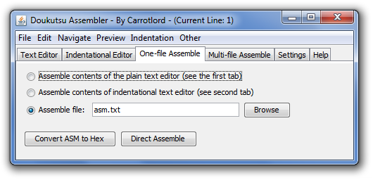
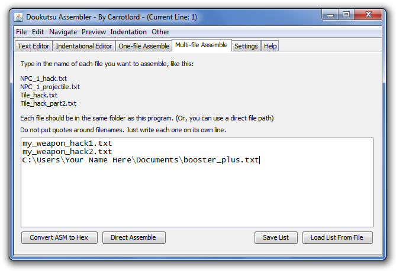

The Doukutsu Assembler consists of a top menu bar and a few tabbed windows. I'll explain each of these shortly.
Top Menu Bar
File Menu: Used for New File, Open File, Save File, and Save As. The file menu is used to load and save files for the 2 text editors. For example, Open File will load an existing file into whichever text editor happens to be selected.
Edit Menu: Has basic text formatting operations, such as Undo/Redo, Cut, Copy, Paste, Select All, Find, and Find/Replace. Fairly self-explanatory.
(Unfortunately Undo/Redo is disabled in the second editor because undoable edits tend to screw up the tabbing. Also, Undo/Redo is disabled completely if you enable syntax coloration. I'm sorry about these bugs and I am trying to fix them.)
Navigate Menu: Has the "Go To Line" option. This is very useful for finding where syntax errors occurred because the error message will usually give you a line number.
Preview Menu: An interesting menu that lets you "see what the program sees". This will show you what the code looks like during various stages of compiling and processing. It's also great for debugging because you can view what happens to the text after your defines are applied.
Indentation Menu: Has the "auto-adjust indents" option that lets you separate labels from regular instructions. Only the second text editor is capable of doing this.
Other Menu: Miscellaneous options such as deleting the error log file when it gets too big, editing the settings file manually, recoloring syntax, and seeing the about window.
Tab 1: Plain Text Editor
The plain text editor is very similar to Notepad and can do many of the same things. You're supposed to use this to edit your assembly source files and then assemble those files later. You can also use it to edit the settings file and non-ASM related text files.
Tab 2: Indentational Text Editor
This text editor is specialized for ASM-source-file editing. It has an automatic indentation system designed to create a weak barrier between labels and regular assembly instructions. For more information, please see the indentational editor guide.
Tab 3: One-File Assemble

Now it's time to convert your assembly source code into hex-data. You can get your hex in text-format by clicking "Convert ASM to Hex". The files with the hex output will be located in the Output folder (which is located in the same directory as the Doukutsu Assembler program).
If you want a fast way to get your hack applied to your mod, use "Direct Assemble". Make sure you chose the correct game executable in the settings tab. Now the Doukutsu Assembler will write the necessary bytes to the *.exe file. Run the game to see if it works properly.
Please be aware that the Doukutsu Assembler will overwrite as many bytes as needed starting at the offset given in your source code. The Assembler will never attempt to insert bytes (at least - it shouldn't), so the game executable's filesize should not change.
Also, be sure to close OllyDbg before doing a Direct Assemble to make sure the data can be properly written.
Tab 4: Multiple-File Assemble

Multiple-file assemble does exactly what you think it does: it lets you compile multiple ASM-source files with a single button click.
You can use this tab to type in a list of filenames into the box. Press "Convert ASM to Hex" or "Direct Assemble" and all of them will be assembled at once. Save your list of filenames to avoid losing it later. You can also "save settings" in the settings tab and your list of filenames will be preserved even after you close the program.
Tab 5: Settings

Game Executable Name: Whenever you click "Direct Assemble", your ASM code will be compiled and applied to this game executable.
Exit Program After Assembling: Activate this checkbox to make the program quit right after you press "Convert ASM to Hex" or "Direct Assemble".
Make Backup Of Original Game: Just in case your .exe gets messed up, select this checkbox to always have a backup copy of your mod prepared beforehand. If a backup already exists, a new one will not be created, so be careful about that.
Save Errors to error.log File: Check this box to save error messages to the error.log file (which will be created in the same folder as the program). Note that minor error messages might not be saved.
Enable Progress Bars for One-File Assemble: Select this checkbox to make progress bars work for single-file assemble if the filesize of the ASM source is large enough. If you don't like progress bars, uncheck this.
(Notice that multi-file assemble will always use a progress bar. There is currently no option to change this, though there might be in the future.)
Show Current Line Tooltip in Text Editors: Select this checkbox to enable a small info box that will tell you the current line number in either of the text editors. The box will be shown whenever you move the mouse around and then pause. Personally I find this to be kinda annoying, so it's disabled by default.
Show Current Line Number in Title: Select this checkbox to make line numbers show up in the title. The line number shown will be the one that corresponds to whichever text editor is selected.
Use Syntax Coloration: Activate this checkbox so that your ASM instructions and labels are color-coded. Disable this checkbox if you don't like coloration or you really want to use Undo/Redo in the first editor.
Advanced Settings... : This lets you determine when a progress bar should be used for single-file assemble. If you set the limit to 10 kB, then when your total source-code size is greater than 10 kB, a progress bar will be shown while assembling. Otherwise, a progress bar is not shown. If you always want to have a progress bar, set the limit to 0.
Save Settings: This button is important because it does more than you might think it does. Not only does it save the status of all the checkboxes, it also saves the names of the files currently being edited in both text editors. When you open the program again, the text files you were editing before will be automatically loaded. But this only applies if you remember to click "Save Settings"!
Load Settings: Loads settings from the file settings.ini. The settings are automatically loaded when you open the program, so you will rarely need to click this.
Reset to Default Settings: All options are set to the default values. Don't forget to click "Save Settings" after this.
If you've used old versions of the Assembler, you may notice that "Enable Thorough Jump Checking" is gone. I figured that this was a useless option because I warned everybody not to disable it because it was important or something, and so nobody did. Anyway, the jump calculation system has been improved so that checking a jump multiple times is not needed anymore.
Tab 6: Help
A simple help tab that tells you much less information than the guide you are reading now.
Back to the Table of Contents